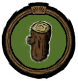
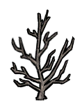
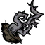
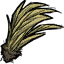

| This article may contain instructional language and subjective recommendations. Readers should identify the content clearly. You can help by rewriting text from an objective point of view and trimming instructions. |
| This article may contain instructional language and subjective recommendations. Readers should identify the content clearly. You can help by rewriting text from an objective point of view and trimming instructions. |
First, try to avoid turning into a beaver by cutting too much wood. Prepare a big tree farm before your curse takes hold, and stockpile sanity-gaining materials and clothing. Healing Salves and poultices are also helpful. Try to keep your sanity at 120-200 at all times. When full moon comes, cut down all the trees you can see that are fully grown until a Treeguard spawns. Maintain being a beaver until the second full moon is over, which will take 2 or 3 days. After the curse wears off, try to kill as many Beardlings as you can and then make Meatballs out of the Monster Meat and Berries. This is also a good way to farm Beard Hair and Nightmare Fuel for crafting later. Then, use some of your Dress items and sanity gaining items to get your sanity to 120-200 again, and use the healing salve to heal yourself up to full health. Farming like this can get you a lot of useful materials.
If Woodie chops down too many Trees in a short space of time or if it is a Full Moon, he will transform into a Werebeaver. It does not matter which axe is used in the process. In this Werebeaver form, the Map will be unavailable, and all of the HUD will disappear and be replaced by the Log Meter.
The Werebeaver is able to chop down Trees, dig plants, mine Rocks, demolish Structures (like a Hammer would), dig Graves and Rabbit holes, and fight mobs. His attack strength is equivalent to normal damage of a Tentacle Spike (51). If the player destroys a Plugged Sinkhole they will not be able to travel down as a Werebeaver. The Werebeaver has unlimited night vision and as such is immune to Charlie.
The log meter is effectively like both health and hunger in werebeaver form. It will decay at a rate of 2 points every 2.5 seconds and any damage taken will be absorbed by the log meter. To keep the meter up the player must consume any of the items listed below. Because it's much easier to refill the log meter then to heal and because werebeaver form has a built in 80% armor effect and high damage attack, many players prefer werebeaver form for combat, especially early on. Werebeaver combat is less useful in games where you already have a Marble Suit + Football Helmet combo (98% damage reduction) and several Tentacle Spikes.
Further the werebeaver's gnaw ability is much faster than digging with a shovel, faster than a pickaxe, and has no durability. Many players like to dig up all the grass twigs and berries, smash all the rocks, loot all the graves and generally Grinch large areas in werebeaver form, and then pick everything up afterward in normal Woody form.
The Werebeaver has no inventory and will drop all items upon transformation, including Lucy the Axe. When the Log meter reaches 0, the player will spawn in the same spot in which they just died, as Woodie, at the beginning of the next day, with 50 Health, 50 Hunger, and 50 Sanity. Any mobs aggressive against the Werebeaver will remain in place and also be aggressive towards Woodie, possibly killing him because of the low health.
The console command for turning Woodie into the Werebeaver is
GetPlayer().components.beaverness:SetPercent(1)
(Please note that the code you type in MUST be identical to the one here)
| Log Meter Consumption Table | |
|---|---|
|  | Log Meter (LM) |

|
Living Log +50 LM |

|
Boards +15 LM |

|
Logs +10 LM |
|  |
Saplings +10 LM |

|
Berry Bush +10 LM |
|  |
Spiky Bush +10 LM |
|  | Grass Tuft +10 LM |

| Twigs +5 LM |

|
Pine Cones +2 LM |

| Cut Grass+1 LM |
While in the Werebeaver state, the player should consider doing these things to maximize its effectiveness.
In Werebeaver form, you can easily demolish rocks, marble pillars, and graves to loot later as Woodie.
It's a good idea to leave at least one intact gold mine or a marble pillar, so you can easily locate your loots in your map when you get back as Woodie.
Since the Werebeaver does not take damage in the same way from spiky bushes, harvesting them in this form is a smart approach.
If you don't yet have a Grass and Sapling farm in your Base Camp or just want a bigger one, now is the right time to gather Grass Tufts and Dug-out Saplings. The werebeaver uproots grass and saplings, leaving the plant and the material behind for gathering. You can also do this with Berry Bushes. Be careful not to eat the plants after you gnaw them. Then you can get back and let Woodie plant them all.
Any Treeguards you kill will give you around 6 living logs and some monster meat. The Beardlings you kill will give you monster meat, beard hair and nightmare fuel. The trees you cut down will give you a lot of logs and pine cones to make a new farm! However, you'll have to sacrifice many sanity and health giving items, seeing as returning to Woodie's form will result in low health, hunger, and sanity.
When your Log Meter hits 0, you will become Woodie again with your sanity, hunger and health all at 50. If you play as Woodie, you should be prepared for this. Try to make a chest full of pumpkin cookies, or possibly use a backpack as a "First Aid Kit".
If you are without armor or a weapon and are going to be attacked, chop down lots of trees until you turn into the werebeaver so you have a better chance of survival. If your log meter is down, gnaw more trees so you can maintain the werebeaver curse and fight more.
{kind=link}
{kind=link}
{kind=link}
{kind=link}
{kind=link}
{kind=link}
{kind=link}